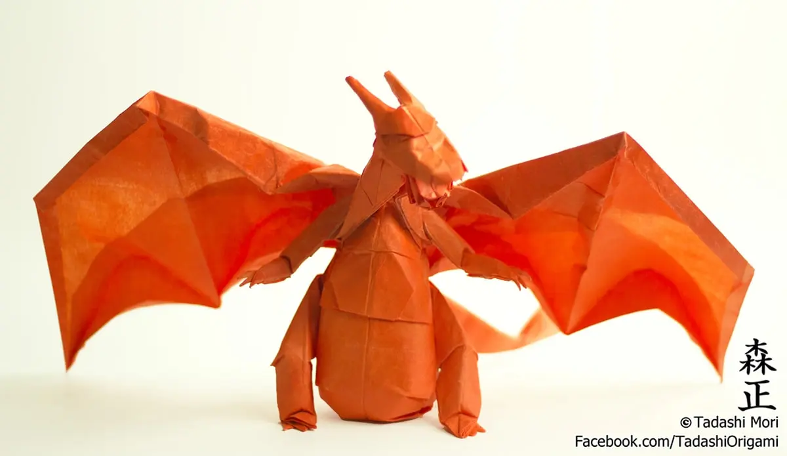

Origami is the art of paper-folding. Its name derives from Japanese words ori (“folding”) and kami (“paper”). Traditional origami consists of folding a single sheet of square paper (often with a colored side) into a sculpture without cutting, gluing, taping, or even marking it.
